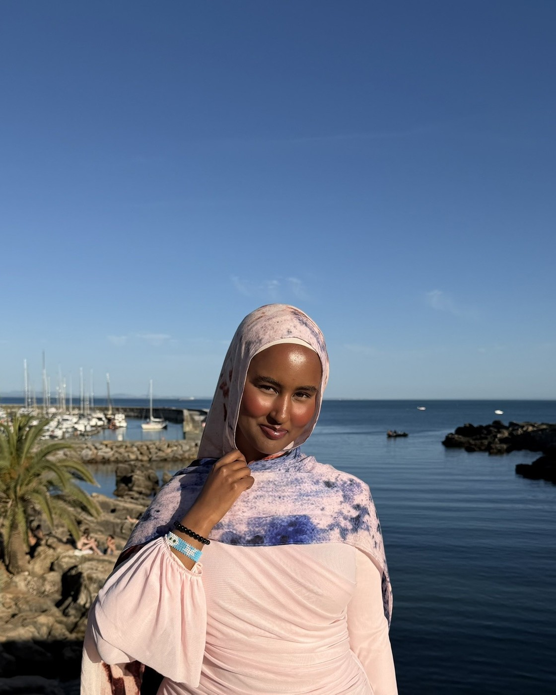

Computer science undergraduate. I build the part of software people actually touch: interfaces, retrieval systems, and the databases holding them up.

I work on the handoff, the moment a model's output or a query result stops being a number and has to become something a person can trust and act on.
Most of what I've built is research-shaped. I've trained unsupervised clustering models to profile risk across 200+ smart contract vulnerabilities, built retrieval-augmented generation pipelines that ground a language model in documents instead of letting it improvise, and tuned reinforcement learning models lap after lap until they held a racing line. What holds my attention is rarely the model itself. It's how a system communicates its own uncertainty, and what somebody does with that.
The rest of my work is the scaffolding that makes any of it usable: relational databases, front ends, and the tests that keep both honest. I care about the failure cases, because that's where people actually need the design to hold.
Away from the screen I'm usually travelling, eating something I can't pronounce, or shaping a bowl badly at the pottery studio. I take one good photograph per trip.
Mid-season race winner at the PASON-sponsored competition, after tuning a reinforcement learning model lap after lap until it held the racing line.
Member of the National Society of Black Engineers, and an attendee of the NSBE 51st Annual Convention.
Built club projects in applied AI and contributed to AI for Social Good work on ethical deployment in education.
Throwing and hand-painting at the studio, the one place where the feedback loop is immediate and nothing can be undone.